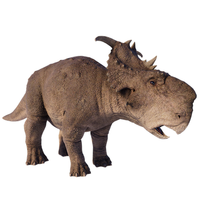

Useful Website
Pachyrhinosaurus is an herbivorous dinosaur from the ceratopsid family, with strong teeth in its cheeks for breaking down tough vegetation. Its name comes from the unusual blunt shape of its snout – Pachyrhinosaurus translates to ‘thick-nosed lizard’ – while this genus is identifiable by the array of adornments on its skull, including a frill and horns. Pachyrhinosaurus can grow up to 6m in length, and weigh as much as three tonnes.
